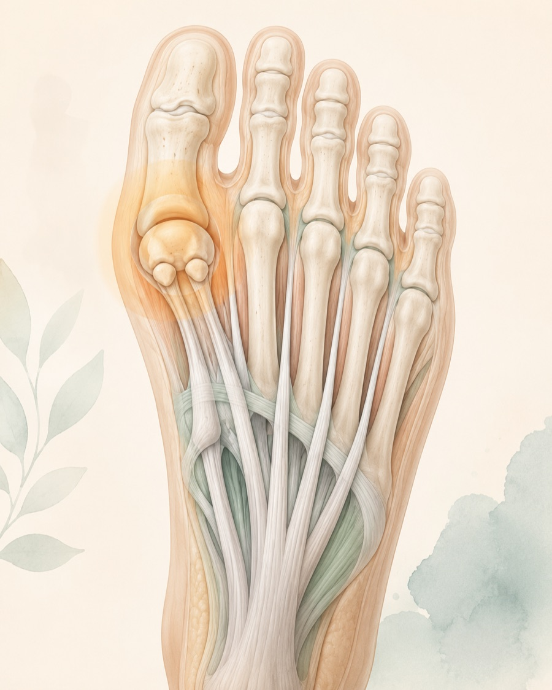
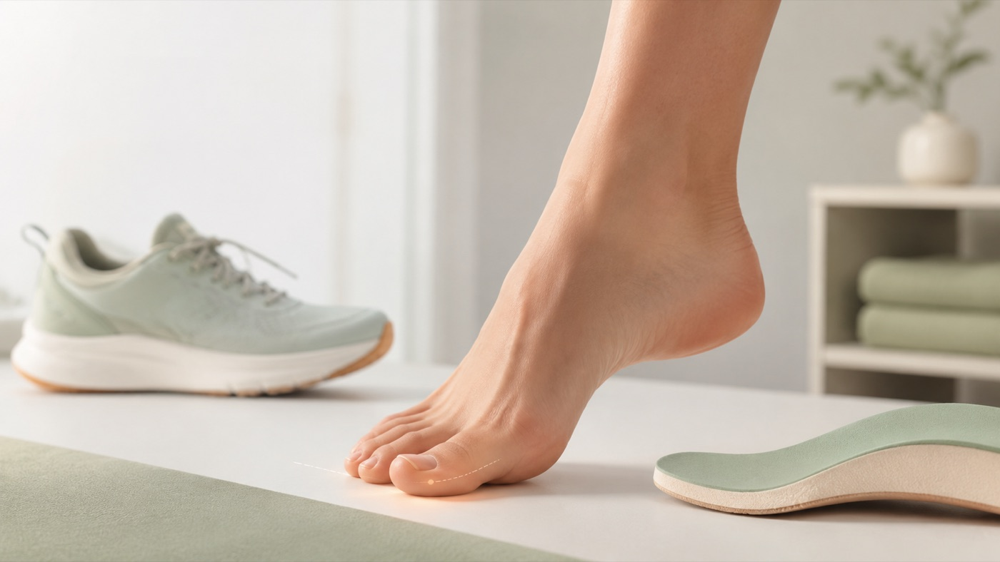

Wat zijn sesamoidklachten?
Onder het grote-teengewricht liggen twee kleine botjes: de sesambeentjes of sesamoidjes. Ze liggen in pees- en bandstructuren onder MTP-1, het gewricht tussen het eerste middenvoetsbeentje en de grote teen. Meestal wordt gesproken over een mediaal of tibiaal sesambeentje en een lateraal of fibulair sesambeentje.
Deze botjes werken mee bij afwikkelen en afzetten. Ze helpen de buigpees van de grote teen en verdelen druk onder de voorvoet. Daardoor krijgen ze relatief veel belasting bij hardlopen, sprinten, springen, dans, sporten op de voorvoet, hurken, hoge hakken en schoenen met weinig demping.
Sesamoidklachten beschrijven pijn onder het grote-teengewricht. Het is geen bewijs dat het sesambeentje zelf altijd de enige oorzaak is. Drukpijn precies onder een van de sesambeentjes weegt anders dan diffuse pijn onder de bal van de voet, pijn bovenop het gewricht of een acuut rood-warm-dik gewricht.

De pijn kan passen bij sesamoiditis, stressletsel of een fractuur, maar ook bij hallux rigidus, jicht, turf toe, huiddruk of algemene metatarsalgie.
Welke klachten kunnen erbij passen?
De pijn zit vaak onder het grote-teengewricht, soms heel lokaal onder een van de twee sesambeentjes. Afzetten, traplopen, hardlopen, springen, op de tenen staan of lopen op harde ondergrond kan de pijn uitlokken. Sommige mensen merken dat schoenen met een dunne zool of hoge hak meer klachten geven.
Bij overbelasting ontstaat de pijn vaak geleidelijk. Bij letsel kan er een duidelijk moment zijn geweest, bijvoorbeeld een hyperextensie van de grote teen, een val, sprintactie of landing. Zwelling, blauwe plek, verlies van afzetkracht of het gevoel dat de teen niet stabiel is, maakt het beeld anders dan gewone drukpijn.
Soms zijn klachten lang zeurend en diep lokaal aanwezig. Dat kan passen bij aanhoudende overbelasting, stressreactie, fractuur, non-union of zeldzamere problemen zoals verminderde doorbloeding van een sesambeentje. Zulke termen vragen altijd beoordeling in samenhang met onderzoek en beeldvorming.
Wat kan het ook zijn?
Sesamoiditis is een verzamelterm voor irritatie of overbelasting rond de sesambeentjes. Dat beeld ontstaat vaak geleidelijk bij herhaalde druk of sportbelasting. Een stressreactie of stressfractuur geeft meer verdenking op botbelasting; een eerste rontgenfoto kan dan soms nog normaal zijn.
Een sesambeentje kan ook bipartiet zijn: van nature uit twee delen bestaan. Dat is een normale variant, maar kan op een breuk lijken. Vergelijking met de andere voet of aanvullend onderzoek kan soms helpen. Avasculaire necrose, waarbij de doorbloeding van bot een rol speelt, is zeldzamer en komt vooral in beeld bij aanhoudende diepe lokale pijn en passende afwijkingen op beeldvorming.
Hallux rigidus geeft vaker stijfheid en pijn bij bewegen of afwikkelen van het grote-teengewricht, soms met botaanwas bovenop het gewricht. Bij jicht of podagra staat juist een acuut rood, warm en gezwollen gewricht op de voorgrond. Een gewone sesamoidklacht hoort niet gepresenteerd te worden als een acuut ziek ontstekingsbeeld.
Turf toe of plantaire plaatletsel van MTP-1 ontstaat vaak na een hyperextensiemoment van de grote teen, met pijn, zwelling, blauwe plek, instabiliteit of verlies van afzetkracht. Meer centrale pijn onder de bal van de voet kan passen bij metatarsalgie. Pijn rond de basis van andere tenen kan meer richting MTP- of plantaire plaatklachten wijzen.
Sesamoidklachten
Pijn precies onder een sesambeentje, vaak erger bij afzetten, springen, hardlopen of druk onder de grote teen.
Hallux rigidus
Meer stijfheid en pijn bij bewegen van het grote-teengewricht, vaak bij afwikkelen.
Lees meer over hallux rigidusJicht / infectie
Een rood, warm, dik en zeer pijnlijk gewricht vraagt beoordeling via huisarts of spoedroute wanneer infectie niet veilig is uit te sluiten.
Lees meer over jichtOnderzoek en diagnose
Het verhaal is belangrijk: sport, belastingstoename, schoenen, trauma, eerdere injecties of operaties, jichtgeschiedenis, wondjes, diabetes en medicijngebruik kunnen de beoordeling sturen. Ook het verschil tussen geleidelijk toenemende pijn en een acuut moment is relevant.
Bij lichamelijk onderzoek wordt gekeken naar exacte drukpijn onder het mediale of laterale sesambeentje, beweeglijkheid van MTP-1, pijn bij dorsaal buigen van de grote teen, teenstand, eelt of drukplekken, afwikkeling, voetstand en pijn bovenop of onder het gewricht. Soms wordt voorzichtig beoordeeld of er instabiliteit of verlies van afzetkracht is.
Beeldvorming hangt af van de vraag. Gewichtdragende rontgenfoto's met gerichte sesamoidopnamen kunnen helpen bij stand, artrose, bipartiet sesambeentje of fractuurverdenking. MRI kan informatie geven bij verdenking op stressreactie, avasculaire necrose of turf toe. CT kan soms nuttig zijn voor botdetail, non-union of operatieplanning.
Eerst niet-operatieve opties
De eerste stap is vaak druk onder het grote-teengewricht verminderen. Dat kan gaan om tijdelijk aanpassen van sport, minder springen of sprinten, lagere hak, meer demping, stijvere zool, rockerzool of een zool met uitsparing rond het pijnlijke sesambeentje. Soms wordt een dancer's pad, J-pad of carbonplaat gebruikt om de afwikkeling te sturen.
Tijdelijk minder afzetten, springen, hardlopen of lang staan kan nodig zijn om irritatie te laten zakken.
Een stijvere of afwikkelende zool, demping, lage hak of sesamoid-uitsparing kan druk verminderen.
Taping kan in geselecteerde situaties de grote teen of afwikkeling tijdelijk sturen.
Bij verdenking op fractuur of ernstiger botbelasting kan tijdelijke immobilisatie worden besproken.

Injecties worden niet als standaardoplossing gepresenteerd. Eerst moet voldoende duidelijk zijn wat de pijnbron is, en infectie, stressfractuur of andere risicovolle oorzaken moeten passend zijn meegewogen. Pijnstilling of ontstekingsremmende medicatie hoort bij persoonlijke medische afweging via eigen arts of apotheek.
Wanneer specialistische beoordeling relevant kan zijn
Specialistische beoordeling kan zinvol zijn bij aanhoudende lokale pijn onder MTP-1, duidelijke sportbeperking, verdenking op stressfractuur, verplaatste fractuur, non-union, avasculaire necrose, turf toe, instabiliteit, relevante artrose of wanneer gerichte drukontlasting niet voldoende helpt.
Een operatie is geen standaardbehandeling voor sesamoidklachten. Als een ingreep wordt besproken, gebeurt dat meestal pas na zorgvuldig onderzoek en beeldvorming. Mogelijke redenen kunnen zijn: langdurige klachten ondanks goede ontlasting, een problematische fractuur, non-union, ernstige instabiliteit, AVN/collaps of een ander structureel probleem.
De risico's verdienen rustige bespreking. Verwijderen of behandelen van een sesambeentje kan invloed hebben op afwikkeling, stijfheid, grote-teenstand, restpijn of drukverplaatsing naar andere delen van de voorvoet. Daarom moet een eventuele operatie passen bij de exacte pijnbron, voetvorm, sportniveau, verwachtingen en alternatieven.
Wat bespreek je tijdens een consult?
Neem schoenen, steunzolen, sportinformatie en eerdere foto's of verslagen mee. Het helpt om te vertellen of de pijn geleidelijk of acuut begon, of er een specifiek afzetmoment was, welke sport of belasting de pijn uitlokt, en of er roodheid, zwelling, blauwe plek of wondjes waren.
Bij onderzoek wordt vaak geprobeerd de pijn precies te lokaliseren: mediaal of lateraal onder het gewricht, centraler onder de bal van de voet, bovenop het gewricht of rond de pees- en bandstructuren. Dat detail maakt het verschil tussen sesamoidklachten, hallux rigidus, jicht, turf toe en gewone metatarsalgie.
Waar kan je terecht?
Deze pagina is algemene uitleg op matthijsvandam.nl en geen officiële ETZ-patiëntinformatie. Bij nieuwe of niet-acute klachten is de huisarts vaak het eerste aanspreekpunt; afhankelijk van de situatie kunnen podotherapie, fysiotherapie of schoentechnische zorg een rol spelen.
Als specialistische beoordeling nodig is, loopt verwijzing via de gebruikelijke zorgkanalen. Voor afspraken, planning, uitslagen en praktische ziekenhuisinformatie zijn de officiële ETZ-kanalen leidend.
Deel via deze website geen medische gegevens, foto's, verwijsbrieven of vragen over lopende zorg. Gebruik deze website niet bij spoed of acute klachten. Neem dan contact op met de huisarts, huisartsenpost, de geldende spoedlijn of bel 112 wanneer dat nodig is.
Veelgestelde vragen
Wat zijn sesamoidjes?
Sesamoidjes zijn twee kleine botjes onder het grote-teengewricht. Ze liggen in pees- en bandstructuren en helpen bij drukverdeling, afwikkelen en afzetten.
Waar zit de pijn bij sesamoidklachten meestal?
De pijn zit meestal onder het grote-teengewricht, vaak precies onder een van de twee sesambeentjes. Dat verschilt van meer diffuse pijn onder de bal van de voet.
Wat is het verschil met hallux rigidus of jicht?
Hallux rigidus geeft vaker stijfheid en pijn bij bewegen van het grote-teengewricht. Jicht geeft vaak een acuut rood, warm en gezwollen gewricht. Sesamoidklachten zitten vaker als lokale druk- of belastingspijn onder het gewricht.
Is beeldvorming altijd nodig?
Niet altijd. Rontgenfoto's met belasting en gerichte sesamoidopnamen kunnen helpen. MRI of CT kan in geselecteerde situaties nodig zijn bij verdenking op stressreactie, fractuur, avasculaire necrose, turf toe of operatieplanning.
Wat helpt meestal eerst bij sesamoidklachten?
Vaak wordt eerst geprobeerd de druk onder het grote-teengewricht te verminderen met belastingaanpassing, stijvere zool, rockerzool, demping, lage hak, zoolaanpassing of een uitsparing rond het sesambeentje.
Wanneer is specialistische beoordeling zinvol?
Dat kan zinvol zijn bij aanhoudende lokale pijn, sportbeperking, verdenking op fractuur, stressreactie, avasculaire necrose, turf toe, instabiliteit of wanneer gewone drukontlasting onvoldoende helpt.